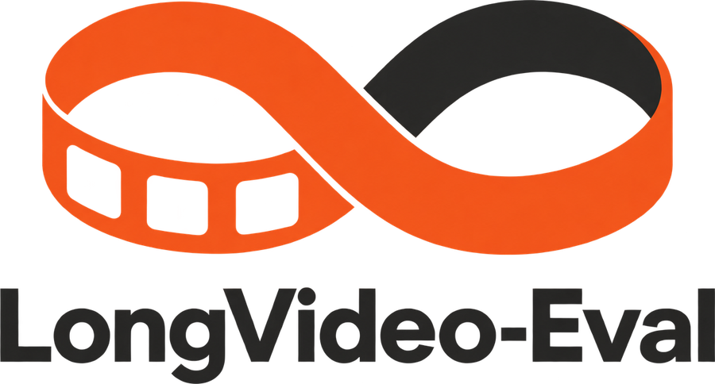

Open-source platform, actively developed
LongVideo-Eval: Evaluation Infrastructure for Long-Video Intelligence
A system-aware, complete-cost evaluation harness. It compares long-video pipelines under fixed backbones, matched evidence budgets, and one shared cost ledger spanning video-side and model-side work. Every method plugs into one stage of a shared pipeline, so a new idea can be compared with every baseline from its first run.